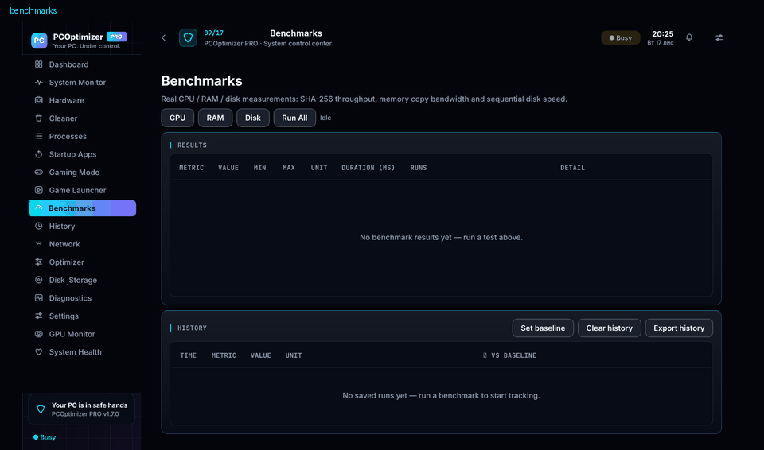
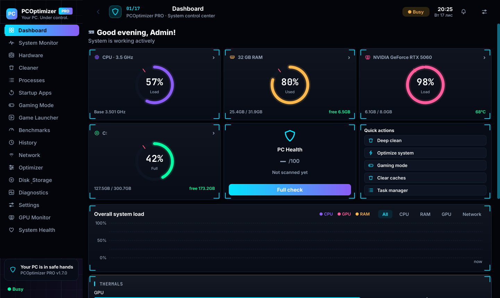
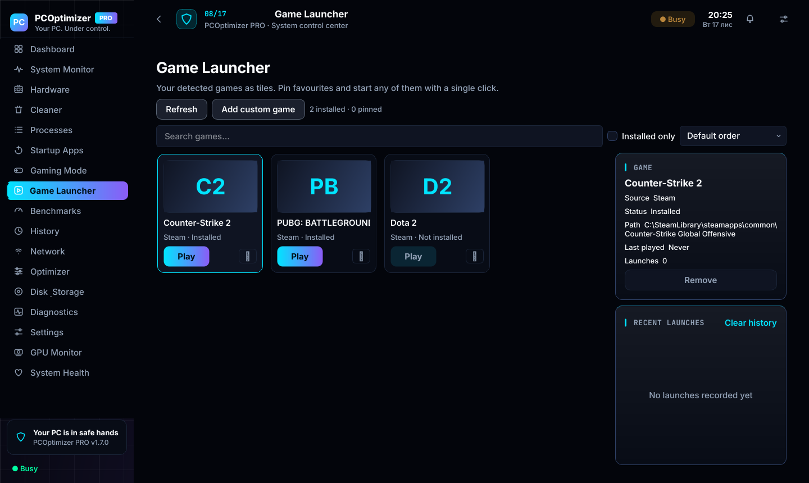
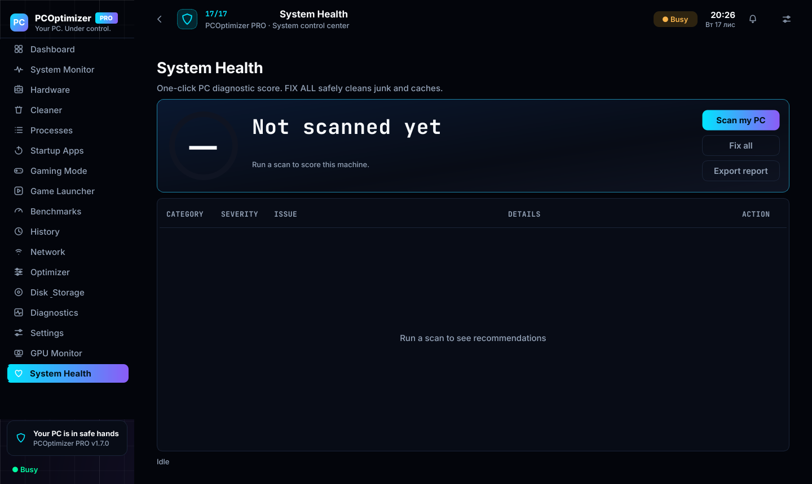
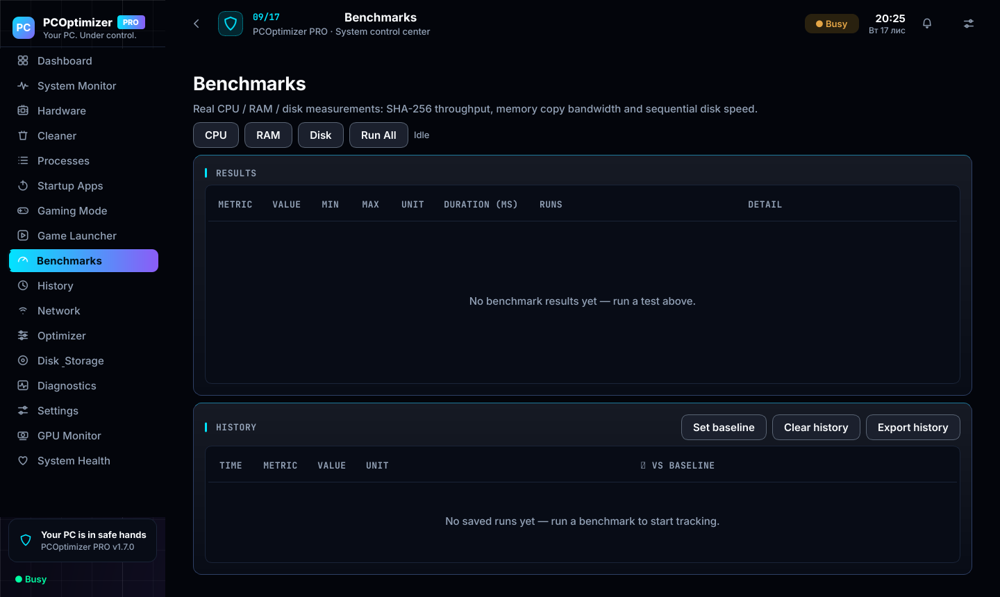

Що всередині
Спостереження
CPU/RAM/диск/мережа, NVIDIA NVML, WMI ACPI, історія продуктивності та діагностика SSD/подій Windows.
CPU/RAM/диск/мережа, NVIDIA NVML, WMI ACPI, історія продуктивності та діагностика SSD/подій Windows.
Дії з відкатом
Бекап → застосування → undo; точка відновлення перед профілями оптимізатора; UAC лише для конкретних операцій.
Бекап → застосування → undo; точка відновлення перед профілями оптимізатора; UAC лише для конкретних операцій.
Для геймерів
Ігровий режим із профілями, Steam-лаунчер із пошуком і улюбленими іграми, чесні бенчмарки CPU/RAM/диска.
Ігровий режим із профілями, Steam-лаунчер із пошуком і улюбленими іграми, чесні бенчмарки CPU/RAM/диска.
Зручність
29 тем із миттєвим перемиканням, UA/EN, трей-алерти, CSV/JSON/PDF-експорт, оновлення з GitHub.
29 тем із миттєвим перемиканням, UA/EN, трей-алерти, CSV/JSON/PDF-експорт, оновлення з GitHub.
Демо

Екрани




Технічно
Python 3.13 + PySide6, шар сенсорів із mock-бекендом, сервіси без Qt-залежностей, фонові Task, понад 590 pytest-тестів, CI + автоматична збірка релізу за тегом.